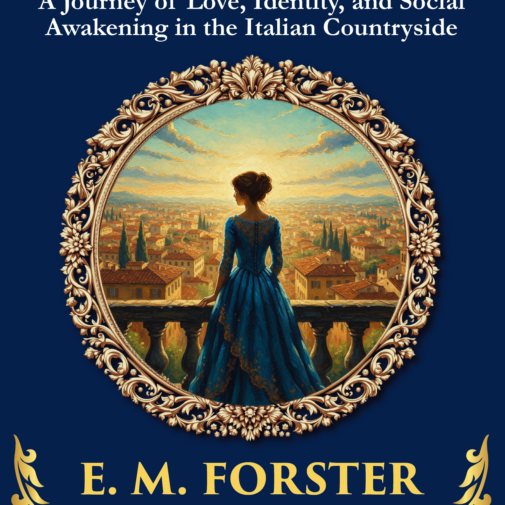

Book 1: A Room with a View — E. M. Forster
Original Cover Template

Source JPG (Illustrator)
Raw AI Art

Generated by Gemini
Composited Result

Frame Integrity: PASS
Medallion Close-Up: Before vs After Compositing
Before (Original Placeholder Art)

After (New AI Art Composited)

Frame ring changed: 0.00%
Mean delta: <0.1
Medallion art changed: 90%+
Blend mode: PDF JPG-blend
Output: 3784x2777 @ 300 DPI
What Was Fixed
Root cause: The compositing pipeline used a simple geometric circle mask to place AI art into the medallion. The radius was too large, extending into the inner beaded ring of the ornamental frame and overwriting it with AI art. The PDF's SMask alone couldn't protect the ring because it marks the entire Im0 region as visible.
The fix: A hybrid mask approach — min(geometric_circle, smask):
- A tighter geometric circle (r=945, just inside the beaded ring) prevents art from bleeding into the frame
- The PDF's SMask handles the outer scrollwork anti-aliasing
- Art only appears where both masks allow
- Frame pixels outside the circle are hard-restored from the original, guaranteeing 100% pixel-identical frame preservation
Files changed: src/pdf_compositor.py and src/cover_compositor.py